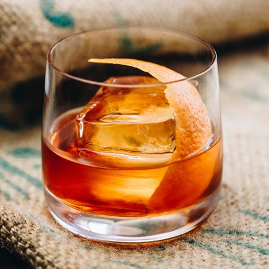

Old Fashioned

História
Um dos drinks mais antigos do mundo,
datado do século 19 e criado em NY.
Existem variações de receitas de old fashioned,
desde receitas com cubo de açucar, xarope simples,
Maraschino e até absinto.
Ingredientes
- 60 ml/ 2 oz de Bourbon
- 7.5 ml/ 0.25 oz de xarope simples (ou Maple)
- 2 dashes de Angostura (ou outro bitter)
- Laranja
- Gelo
Preparo
Misture o xarope simples o bourbon e coloque a
angostura em um copo baixo.
Coloque de preferência um gelo grande e misture
com a colher bailarina por alguns segundos.
Corte um pedaço de casca de laranja e esprema
junto a um fósforo aceso. Passe a casca na borda
do copo e utilize a casca como enfeite.